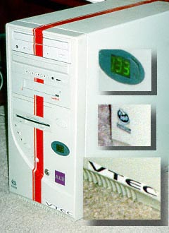
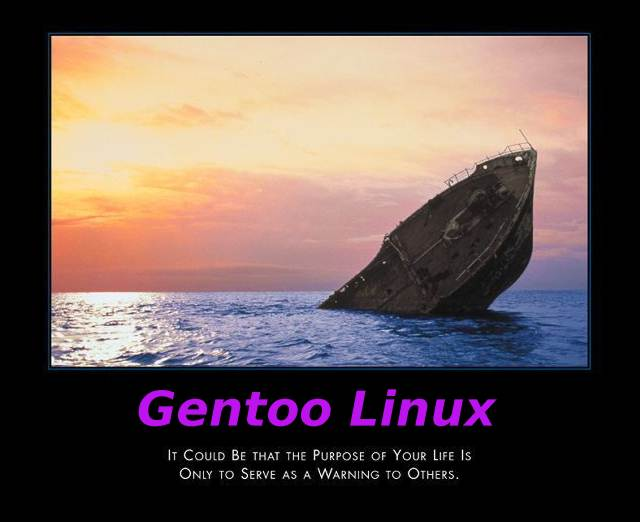

Welcome, this page is dedicated to the Linux Community's greatest ambassadors, Gentoo users. Like the annoying teenager next door with a 90hp import sporting a 6 foot tall bolt-on wing, Gentoo users are proof that society is best served by roving gangs of armed vigilantes, dishing out swift, cold justice with baseball bats to those fucking ricer bastards.
Please note, these quotes are real. I didn't bother to link to the original quotes because it's too much work and this page is mostly an amalgamation of different things that I've found on the web. Besides, we all know people like this, if you spent 6 hours compiling X, you'd like to think it was for something useful right? You can't make this shit up, we're not kidding. People like this are real. While some pages attempt a more practical look at a Gentoo user's behavior, we're not so lenient. Most of these quotes come from the Gentoo forums themselves or from slashdot.
We've bolded things that are just so ludicrous that you need to sit down to read them.
HOLY COW I'M TOTALLY GOING SO FAST OH F***
"I am going to try to squeeze another 6% out of my system. It's the fact that you know your system is about as optimized as it's going to get. Also, my old Athlon Xp 1500 smokes most of the 2.0Ghz+ boxes.. And that's what it's all about."
"The performance gained by CFLAGS on x86 is minimal at best -- largely because the machines are still basically overclocked 386's at their core."
"Why in the hell are using software compiled for a 386 on a Pentium 4 class machine?"
"There are so many steps involved in tweaking the last uumph out of your linux system- and it really is a work of art to pull it off- I have used many different kernels and all sorts of optimization combinations-yesterday I finally used -noatime and -notail for my reiserfs file system: The single biggest performance boost I have yet to see-now I can have gnome2.2 running using gnome-terminal to compile the latest j2sdk from source (nice -n 19)while browsing with mozilla while running e17 in a seperate login with two eterms and run Unreal Tournament at full speed (this with an apache webserver running for my dyndns pseudo-domain and a mysql for my answering-machine software for my isdn card-which keeps track of all incomming phonecalls and manages my telephone book app and ntfsd/sshd/dhcp server/squid)..."
"its -O3 the letter, not -03 the number"
"I love building all sources from scratch, then it will be optimized and made to run smooth for MY machine. as Debian normally uses binary packages, yeah dependencies crap may happen, that's odd, you might as well just switch to pure source base distro, right."
"I notice that my disk does a whole lot of thrashing when I boot up. I have a lot of stuff that gets loaded into memory every time I boot, like X11, ion2, Firefox, Eterm, Thunderbird, etc. It seems to me that putting all of the files necessary to those apps in a contiguous section on the disk and loading that into memory in one shot would be a whole lot faster. Is there a way to do this? Is it stupid?"
"I use Gentoo because I'm a speed freak - I can't stand the thought that some of my packages might not be running as fast as they could be."
". . . and I liked the idea of running an entire system that wasn't compiled for a 386."
"Without a doubt, Gentoo has set itself apart from every other distro out there. Because it's source-based, it's notorious for its speed. Because of emerge, it's notorious for being simple to maintain."
Yea, I really don't understand all the complaints about the time to install gentoo. It is like complaining about your Ferrari because the dealership was so far away.
"I find it suprising no one has mentioned the fact that Gentoo the only mainstream distro that uses gcc3 for everything. That's what brought me to Gentoo in the first place."
"If Debian people think compiling sucks, well so what? I guess they're satisfied with Someone Else's Binaries. I prefer to play on Gentoo's strengths. I get exactly what I want compiled in -- nothing less, nothing more, and with the optimizations I want."
"Yet, binary distros are riddled with bugs, and are much more annoying to fix given the the cumbersome edit/build package/install package cycle."
"As a Gentoo user what really stands out to me is that this test was clearly biased away from Linux. If the reviewers had been serious they would have used an optimised distributions such as Gentoo, which would have taken far fuller advantage of the extra 32bits in each register to provide a much fuller experience, more than any current Linux distribution possibly could. It really saddens me to see that people go out of their way to spend so much money on such expensive hardware and then squander their investment by running barely suitable software on it. To me, an extra 0.1% performance increase, even if I am only imagining it to be faster, is certainly worth one day a week recompiling all of the latest packages from source code. Even if I do occasionally get my CFLAGS in a muddle! I think I speak for Slashdot when I say that Gentoo is the only sane option for getting the most from your hardware!"
"And what about Gentoo? I think that this is the best distribution to run on a 64-bit processor. Perhaps the test needs to be reworded to "without any manual recompiling" and then redone. Compiling all your software yourself, optimized for your processor, gives you a great speed boost. I think this is one major advantage where Linux excels in comparison to Windows."
"Personally, I can tell a difference between my Gentoo install and my previous Red Hat install. What's the deal with these people? He can't possibly be right..."
"I know how much everyone here loves optimized software. This is why I was surprised to read today on the GNOME mailing list that Ubuntu is taking advantage of some optimization opportunities that I think Gentoo is missing out on."
"It's easy to work with and we can do a custom install with no XFree86 or other stuff that we don't need or want on the system."
"Gentoo is much more optimized in my opinion, it has more support, benefits any hardware circumstances, and runs at at least 20% faster than Red Hat."
"Having said that, it looks like the guys doing the testing got their CFLAGS wrong. Gentoo's performance should never be worse than Mandrake -- I reckon they forgot omit-frame-pointer."
"The simplest difference between gentoo and binary distros is NOT that you compile your own. That is just a side effect. What is far more important is that you have the CODE, or rather more importantly, the HEADERS! If you EVER tried to compile a package yourselve on a binary distro you will have found that you first have to download a ton of headers, wich are often out of date, or you are using some weird binary. Simply put, if I want to compile a package on gentoo on my own I can do so by JUST compiling the package, I do not first have to download the package with the linux headers for my kernel, because the headers, and everything is already there."
"But if you happen to pick some junk PC/Sparc/Apple and would want to put it to better use, you soon would find that only flexibility of Gentoo allows you to make something real out of the junk."
"Another example is that you might have a dual core system, while the binaries of a package that are available were specifically intended for uniprocessor machines. If someone else has written multiprocessor patches, or you can write them yourself, you can then recompile the app to get full dual core support."
"Say the binary package you're going to install is unsigned, but you *are* able to get signed, checksummed source. The prudent thing to do in such a case would be to download the secure source and compile it yourself, rather than installing an unsigned and potentially compromised binary on your system, thus possibly exposing yourself to back doors."
"I would rather spend a day compiling X and KDE on my system when I know that it has been built with everything that I need, rather than installing a package that has been compiled with every option and have unnecessary dependencies cluttering up my system."
"Oh please, for the love of jebus, tell me you don't think that is an actual valid CFLAGS setting. You undesrtand that -march implies -mcpu right? I sure as hell hope so."
"People, I am the only one who realise that binary packages are almost useless? Except a few basic packages (as in USE independent, e.g. gcc), the result depends greatly by the USE variable. Let's take for example the mod_php package. How useful a binary mod_php will be?"
"I totally concur. USE flags are the technical feature of Portage that brought me here from Debian. The political reasons are described here."
"Compiling from scratch is really hyped, what makes Gentoo cool is the technical merits like rc-updating and USE flags."
"I still have nostalgia for Debian. I wish it had optimization for i686. I wish it had "USE" flags or "rc-update" features. But it doesn't."
"USE variables. These things are so cool. I don't have a printer at home, so I USE -cups. Boom, nothing wastes space on my computer or pulls in stupid dependencies by compiling in optional printer support. I don't think this would be even close to feasable on a binary distro. Everybody (espescially that Debian mailing list thread) seems to get stuck on CFLAGS, but USE is the real winner. "
"At this point I realized exactly how nice Gentoo is-the USE flags makes things sooooo much easier. In all I needed over 8 hours to get my SuSE distro up and running multimedia-and this with the help of a webage dedicated to to getting mutlimedia stuff up and wunning with SuSE- If I had had to download the source of each of these files and manually do every step involved this would have taken me at least twice as long, i.e more time that was involved in the installation and compilation of Gentoo."
"I buy cars with turbos, I take out the old turbo, insert a new bigger fatter one, I make sure my chip is up to date and I charge that turbo with higher pressure then recommended. I get the fattest rims and accessories I can affoard.I want cutting edge and I hope gentoo keeps balancing stability with cutting edge. See I like the freedom that gentoo will provide me with. Instead of saying "my way or download it yourself", they say "my way or just simply unmask it or make your own ebuild etc".
Hyped? Yeah, just like some people still are calling the internet a hype. Good things are supposed to be hyped, the problem is when complete crap get's hyped, and I'm sure we can all say that gentoo is one of lifes good things. To me gentoo represents freedom, I'm free to choose if I want a stable system or if I want to optimize things. The day there is something that gives me more freedom and that is better in every way then gentoo I will use that. But since the community seems scatterd with very bright people I doubt that it will happen anytime soon.
See, I can work on my car for weeks to get a little more torque, so by choise sacrificing (keeping GRP in mind) some time to compile my system just the way I want it, to me is a treat. My image reflects who I am, and I feel that gentoo's best advantages is not a single system, such as portage, but the actual mentality behind all the development. In that aspect gentoos image reflect who it is, and how it is going to develop in the future.
The gentoo-mentality is what is behind the creation of such a great community, portage, use-flags and all the nifty new things that will come to us, the greatfull users. The main reason to why I'm using gentoo is because I indentify with the gentoo mentality, I feel secure in that with a good culture behind the scenes, it will spread and be visible to anyone using the product (or process as someone prefered to call it)."
"Sure, the extra 2% you gain from optimizing for your CPU is nice, but that's not main the reason to use Gentoo. It's about control. I have two words for the anti-Gentoo critics: "use variables". That's the power of Gentoo, being able to choose whether or not you want to install all of KDE just to get arts, or whether you want to enable gnome support in Abiword. No RPM-based distro can do that."
"What is it about Gentoo that people value in a Web server? It may seem crude to ask that question, because by itself Gentoo Linux is one of the most advanced GNU/Linux distributions available."
"That was the first decent review I've seen of Gentoo. One thing that was not emphasized specifically was USE flags. This is one of the main advantages of Gentoo. You get the binary you want because you compile the options in that you want, all through one easily configurable /etc/make.conf file."
"So you'd have the Gentoo people who want to optimize their iPod access times by 0.2% by raising the maximum sector number - good for them!"
"The idea that I should fix a package I didn't create for an OS I don't use is laughable. That you still don't understand how *you* need to communicate with *us* about this, since I can't keep tabs on every OS packaging QL, is sad. If I just make an ebuild later and dump it here, the problem isn't solved at all."
"As Gentoo users are generally an annoying nusiance in my IRC channel, I would like to be able to set a +b on *!gentoouser@*, in order to keep them out. In order to accomplish this, I would like Gentoo to set the default username to something Gentoo specific."
"I've seen an .ebuild of a program of mine in Gentoo without a build-dependency on glib (while my program heavily depends on it) for months and nobody noticed. That's not exacctly what I consider good packaging."
"I think what I like most about Gentoo is that it's much more bazaar-like than other distributions."
"There is something very appealing about a distro that is so source-code driven (for lack of a better tem). It embodies all the best things about open-source software."
"As has been pointed out to the author of the relevant "advisory" several times, Mozilla has neither a "local zone" nor "predictable cache file locations". The author assumed that the random string generated for his cache file location was the same as everyone else's. I wonder how Gentoo can have fixed, QAed and tested the fix for a vulnerability which doesn't exist?"
"Gentoo does help stop programmers from being lazy, so they write completely airtight code. That can only be a good thing, whichever way you look at it."
"I am a long time Gentoo user, so take what I say with a grain of salt, but I believe that as hardware gets faster, it makes sense to migrate to a largely source-based Linux system. Binary packages encourage inconsistency and incompatibility, whearas source encourages unified development frameworks and integration." [I just want to say, that is the best quote I've ever heard, wonderful stuff. -ed.]
"Usually when you pull in a sec fix it's usually just a jump between distro-provided revisions (package_foo-2.1-r1 to package_foo-2.1-r2) so config files don't normally change either. Frankly, the practice of backporting fixes is not appealing to me. If upstream decides the change is big enough to warrant a new version, well, y'know, it's their app, they should know. Backports are a good way to accumulate cruft."
"Gentoo is the perfect development system, gentoo is the only system that doesn't miss any support for any program language! I mean support on a way you do not to be original with an installation."
"Gentoo requires a compiler, Python and many tools not necessary and even dangerous for servers. But then, even Gentoo itself, calls itself a Meta-distribution."
"Personally Gentoo is the only Linux I'd use on a server, while it takes time to get installed correctly and I need a staging server to test major changes on, I feel it is the single most secure OS simple because I install what I need and nothing else, and other Linux install wans to and requires crap (sound anyone, sound on a server what the hell). I'm reminded of a version of Suse (old version of Suse) that wanted a menstruation calender as part of the server install (explain that). Gentoo is for the truly savvy installer only, but it is the only of for a truly minimal yet fully functional server install (think MC or screen, most servers do install them by default)."
"Why *SHOULDN'T* you put a production server on gentoo? I mean, THOSE things should perform REALLY well, and gentoo is just the thing that does that..."
"Especially if you're a newbie to linux (I wasn't, but I like you, was certainly no master). Following the installation guide that gentoo provides was a very educational experience for me. Not only does it tell you step by step what to do to get your system up and running, it tells you WHY you're doing it. I was very impressed with the instructions."
"I started using Gentoo on the desktop and now I've rolled it out as a production server using some great technologies: ReiserFS, RAID-5, Gentoo patched kernel, Samba ... you name it."
"If you're an experienced admin, and not all people are, Gentoo is easy to admin, update, and as stable as any commercial OS. Sure that sort of flexibilty can make it easy to tank your OS, just like a manual transmission makes it easy to wreck your gears. On the otherhand that sort of flexibility can make a number of admin and support tasks easier. Like all engineering it's a trade off."
"I myself used to use Mandrake on several servers, without really understanding Linux. I made it work. I got by. Only with Gentoo was I able to make the leap to the desktop, and the laptop. And not only make the leap, but understand the system from top to bottom. If I had to, I could now invent my own LFS system, built entirely from source. Only on Gentoo can you find a learning curve that, however gradually, reaches such heights."
"The USE flags and all gentoo ideas are really great, but the real problems of gentoo when it comes to enterprises is a lot of software big players won't support gentoo as os... Think about having an Oracle database or DB2 or a SAP R3 system on gentoo, even on stable gentoo... Gentoo is more educational than mainstream distros. It encourages you to look under the hood and effectively turns a lot of n00bs into l33ts."
"About 30 computers. I'll be having a few other people help me, maybe 3 or 4 others. We'll be doing manual installs as far as I know at this point in time, but I still have some time to think it through."
"Hilarious. I did notice your last statement about no serious business considering Gentoo was not funny because it is not true. I do happen to know 2 high level network administrators who are very seriously considering Gentoo for their server farms. They had invested much time and effort building these systems and now Red Hat is dropping support and forcing an upgrade. They decided they would like to avoid a forced upgrade in the future . Since their time is valuable they are very seriously considering Gentoo and are evaluting it as we speak."
"When you're installing Gentoo you are *forced* to learn, and you can learn much more quickly than with Red Hat or SuSE, where you're not forced to learn the low-level details of the system. It helps if you have a friend who can answer your questions."
"I think 10 minutes server downtime once a couple of months (or even less frequently) due to compiling updates, is not much of an issue. Other packages can compile while the server is up and running, it reduces performance, but not for too long as to call it important. At least this has been my experience."
I think the biggest benefit of running Gentoo is that it's a learning experience. I'm pretty good with computers, and managed to install Mandrake with no problems - but I didn't really know how it did anything. I did look into Linux from Scratch, but decided that was a bit much - Gentoo is a very happy mid point.
"gentoo also approaches the 'moving to linux from windows or mac' ideal in a very different way from something more like RH or MDK. I used both before gentoo simply because i'd heard of them and not gentoo at the time. I could install them, assuming it automatically detected all my devices. And i could usually follow their GUI configuration programs. But the second i hit a wall or there was a bug in the GUI, i was completely stuck. i realized i knew just about nothing about linux. gentoo on the other hand teaches you many important tools and a lot about the interal workings of linux. the documentation is far superiour to anything RH or MDK or slackware or windows ever offered me (i've no experience with macOS). now, when i have a problem, i know what to do, and how to correct it (i must admit, i've had far fewer problems because i knew what i was doing and the install was for my machine, not 100,000 generic people's computers). only gentoo could have offered me that."
"Daniel went on to say that using Gentoo on the customer servers is a mixed experience; while it's easy to use and maintain, and the customers who prefer Gentoo are generally more knowledgable, it does take a long time to install."
"Gentoo is not a hacker's toy; it is a professional's tool. Let's hear from some people who use Gentoo in production environments -- we already know it makes a good custom desktop. What else do you use Gentoo for?"
"The Gentoo install system taught me more about *NIX in the course of a few days than three years of other distros did. I fell in love instantly. It didn't hurt that I could FINALLY build binaries tuned for my CPU, while other distros were much more 'generic'."
"You will notice that even with that crazy MAKEOPTS=-j256 you won't be able to use your cores to the max. With the latest Xeon I was just able to make each one of my 8 cores work at 27%, having all of my cores sleeping at 73%!!! [...] I don't know but having xorg-x11 compiled in a few seconds instead of hours is enough to make me think this -j256 does a good job."
"I'm running GENTOO on many servers under very strange conditions (DoS...) and It performs MUCH FASTER than ANY OTHER Linux distro or FreeBSD."
"The server were were using was a Xen slice on a dual-core Opteron, and the initial compile/install time was extremely fast (a couple hours). MySQL compiled and installed within 15 minutes. The resulting system using the CFLAGs for that dual-core ran at least twice as fast as another slice we had Ubuntu running."
"I'm currently isntalling Gentoo from stage 1 on 300Mhz laptop with 128 megs of RAM. And the compilation is not an issue. That guy sounds like he plans to do all the compiling during the time he would normally be using the computer. Why not do like I did? I started the bootstrap when I was on my way to bed. In the morning, it was finished. Before I went to work, I emerged system. When I got back home, it was done. X and Fluxbox were both installed during the night, no problems there. I didn't lose any time compiling all that software."
"as it turns out, on my computer it took 13 hours to get kdebase. if you have a long list of use flags (including the ones in make.conf.defaults) you can get a long compile. likewise some CFLAGS will speed up compile time and others elongate it. unless the program is only used sparcely, like genkernel, i'd reccomend staying with at least -O2 for optimizations."
"thanks all! nice to know I'm not crazy and so its not a joke. i started emerge kde days ago now and its still going, I used -03 -pipe -fomit_frame_pointer accepted whatever was the default USE."
"A full install (stage1) with Gnome can be done in a day on an athlon-xp, provided you start in the morning and really know what you're doing (ie know exactly what you want in each of the configs, and exactly which packages to merge)."
"I'm stuck with a 400MHz PII on a dial-up connection; it's just too slow. I first tried starting from stage 1, but when I found the bootstrap was still compiling after ten hours, I decided to try a stage-3 install instead. (I was just evaluating it; it wasn't going to be a permanent installation, so who cares if it was optimized?) But even then it took over three hours for the kernel sources to download, and my ISP cuts you off after an unpredictable interval, so the download failed around 94% complete."
"Try installing some cool app you read about in a magazine on SuSE or Red Hat.. First you have to find RPM's and hope they are compatible with your various libraries. Most of the time, there is a lot of sweat and tears trying to figure out why it ISN'T working."
"Another problem of the stable linuxes is that you have everything working but when the distribution goes on to the new version there are numerous changes leading to a quite complex upgrade process of the distribution and the services of the user. Inccompatibilitys, etc are only found at this update and will cause a lot of work, and thus will lead to a lot of errors."
"However I still find gentoo's philosophy appealing. I keep a mandrake system as a home server since 2002, which has been rendered obsolete for some years now and cannot be upgraded to a newer version unless you re-install it from the beginning. This for example as far as I know could not have happened with a gentoo system."
"ONLY the dependencies that the newer version of your application REQUIRES will be updated. That is the key here. In a binary distro, you would be stuck because that would break everything in your system that depends on that dependency lib; but with Gentoo, you only need to do a revdep-rebuild."
"i've run Red Hat, suse, and gentoo servers and i can assure you that updating a profile is much less error prone than update some packages in a Red Hat server. i've had more problems with Red Hat system failure after a global system update than gentoo. yeah gentoo is time consuming, and it requires you to be careful. not for all the push-button servers lovers :)"
"I've occasionally questioned my use of Gentoo on my servers, but each time I come back to Portage. No other distribution lets me control with such a fine grain what goes on my system. No other distribution offers the wealth of packages Gentoo does. Other distributions might be easier to administer, day to day, but they do this by hiding from you things that I actually use."
"The beauty of Gentoo is that you can create and entirely custom environment for any particular task. In the enterprise world servers tend to be very specialized. This is the point at which distributions like RH, Debian, etc. fall flat. Compiling everything into packages that *most people need is just not adequate. I never had a RH LAMP setup that I didn't need to build PHP and/or Apache from sources because it didn't have critical feature X compiled in that our application required."
"It's obvious though that you've never 'designed' anything more than what the mass-market vendors provide you. You would be hopelessly lost if you needed to design a server farm that provided specific LAMP features that don't exist in Red Hat Network's stream of apps and updates. You probably don't even understand that dependencies at a binary level are BAD, because you don't know that there is another way."
"Binary packages from a server distro will include what you need to make it work, the way it used in Gentoo is more in an opt out policy that could be useful security wise but you will rarely miss it. If some corporate software can use LDAP, i doubt a semi decent distro wont include that binary package. Debian ain't secure by default and yes a distro (not an OS) can give you very good security defaults for some server roles that are well defined."
"Debian is easy to keep up to date. Thats because they don't update it."
"If your business depends on you being at the technological front edge, (Etrade for example) then you run something like Gentoo or Debian unstable (Etrade runs Gentoo, but Debian unstable has packages of about the same age and quality.)"
"Although it's my favourite distro, it can be extremely time consuming to update and install software, and when you need to update your kernel, be ready for a day of downtime."
"In fact, I can't even imagine how the developers manage to compile a list of so many packages that go together in the first place, I know I could never manage to do that. And it seems that either they don't use the same packages as us gentoo folks or they are rather sloppy about satisfying dependencies. Even after a bit of digging with yum/apt repositories I still couldn't get mplayer for the life of me. It would be easier to compile by hand but then what is the point of package management?"
"I essentially started using Gentoo because my ....ing KDE clock would never show the right time in Red Hat."
"Binary packages are bad! If you don't use your system to compile itself, it will lose the ability to compile itself. Huge systems like gnome, libc etc. are constantly decaying into complexity. Your pain is necessary, because a fraction of people like you will try and relieve that pain by improving the system."
"I just switched too Gentoo because I was sick of Red Hat doing stuff to my config without me knowing and hogging my memory. I was looking for something new. I tried Debian once, months ago, when I didn't know much of linux, maybe that's why it didn't work, but I don't care. I couldn't even get a stupid X-server installed. Yet I still was looking for a system which would let me decide myself what I should install and preferably had something more up-to-date as i386 binaries, so I found Gentoo, and I'm sticking on it. I'm thinking of installing all the servers for a lanparty with it, but I'll have to discuss that with others."
"Main reasons I came to Gentoo were that I wasn't happy with the technical merits of the RPM based distros and was put off by the elitist Debian attitude."
"For me Gentoo is perfect. For you, perhaps not. What is really strage about Gentoo is this: people who like it or dislike it keep constantly refering to Gentoo-when in reality we are refering to Linux. With othert distro's when you have problems they are problems with Red Hat or with SuSE or with Lindows. But if you have problems with Gentoo you have problems with Linux. That's because with Gentoo you have returned to the source."
"Source based distro historically always = more packages because there is too much competition between binary distros. There is simply no standard Linux binary package. As a result, source based distros like Gentoo update their repos sooner because it doesn't require as much work. Source is source."
Out of all of the linux distros out there, i would say that gentoo takes the least time to mess around...
"Again, I cannot stress enough how much easier gentoo is to me than Red Hat or mandrake when i tried those, I never figured out what was broken when something did not work, or what was installed and what not."
"Debian, however, had some obvious and immediate flaws. Binary based packages drove me crazy. First, I needed a mutt with ssl support compiled in. Then, I found myself wanting mplayer. Next, I wanted a mozilla without mail and news compiled in. (I can't stand it when I accidentally click on a 'mailto' link!) The only solution seemed to be to compile it yourself, make debs, and install it using dpkg. "
I know that most of you would rather run Windows than Red Hat. This is my opinion again, but personally Red Hat runs like crap even on newer systems. Stock package management and static binaries may save time, but in the long run they lower your peak perormance and also make the system unstable, and as useless as a used condom. Even recompiling the kernel on Red Hat causes problmes. Their modern init scripts interfere with some newer kernel operations. It takes as much time to get Red Hat working right as Gentoo. It is time to take out the trash, and we need to stop supporting pay basis distros such as communist Red Hat. They are charging us for the stuff thats spose to be free."
"I tried Red Hat, Suse, and Mandrake on the desktop. If something didn't work, I had nowhere to turn to understand and fix the problem. Not so with Gentoo. Why do you think it is that so many users of other distros are coming here to get their questions answered? This is not a raw coincidence. It is because so many people here have the answers, and a good percentage of them have the answers because they have learned from the experience of working hands-on with source-code, patches, kernel config, drive-layout, and the numerous text-files in /etc."
"Quite simply: yes. Yes Debian, you are losing people to Gentoo. But... Why is this happening? Because you are old, and your stable tree is older than me. We have Portage, we have a source compilation unstable version. We are the cutting edge, and Debian has to realize this. There is a hierarchery of distributions, and right now Gentoo is at the top. There will always be Slackware, because it's always been there. Debian will remain in second place to the leading distro, and they'll always be wondering: "Why? Why are we losing users to (insert distro name here)?" Because you don't innovate. Sure, you're good. But theres usually something better. Live with it."
"You have these guys that will say "ohh, just add xyz to apt configuration files and then type this and then type that and then go here and run this and that. Easy" - but it's not easy and it's not intuitive. I love how Gentoo is so easy to maintain."
"if you use debian heres a warning (atleast if you enter the debian channel): dont come in as root, you never hear the end of it, which was very annoying."
"Speed isn't even the point! Sure, the extra 2% you gain from optimizing for your CPU is nice, but that's not main the reason to use Gentoo. It's about control. I have two words for the anti-Gentoo critics: "use variables". That's the power of Gentoo, being able to choose whether or not you want to install all of KDE just to get arts, or whether you want to enable gnome support in Abiword. No RPM-based distro can do that."
"I have a friend who seemed to claim that Debian's "portage" system is better or more extensive than that of Gentoo. How should i go about convincing him that this just isn't true?"
"What other linux will let you have a vector optimized wordprocessor?"
This one deserves a category of its own:
"I don't think that Debian can really compete with Gentoo. Sure it might be okay, but when it comes to dependencies, you probably are still going to have to get them all on your own. Or is there something like portage in the Debian world as well?"
Looks like we've gotten some attention on the Gentoo Forums recently. Good to see people can take a joke and poke fun. If you're offended, I have a friend who uses Gentoo, and well ... let's just say it's difficult to drink beer with someone who insists on building his drink "from scratch" and with "optimized hops", not to mention, the hot waitress doesn't appreciate his need to know her on a "low-level, stripped down without the bloat" kind of way.
Of course, this thread has it's own wonderful commentary as well, and we can't just let this slide:
"Binary packaging does encourage sloppy coding/design, contrast with the stochastic API unit testing which occurs naturally with all the building with different configurations."
